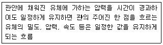
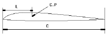
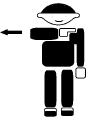
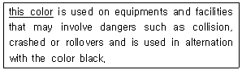
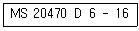
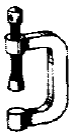

항공기체정비기능사 (2013-10-12 기출문제)
1과목: 비행원리
1. 정상선회하는 항공기의 선회반지름을 구하는 식은? (단, V : 항공기속도, g : 선회경사각이다.)
- gtanø
- V2/gtanø
- V/gsinø
- V2/gsinø
(정답률: 59%)
2. 프로펠러 깃 자신만의 원심력으로 인해 발생하는 비틀림 모멘트의 특성으로 옳은 것은?
- 깃의 무게 중심을 깃 끝 방향으로 이동시키는 경향을 나타낸다.
- 깃의 무게 중심을 깃뿌리 방향으로 이동시키는 경향을 나타낸다.
- 깃의 깃각을 증가시키는 경향을 나타낸다.
- 깃의 깃각을 감소시키는 경향을 나타낸다.
(정답률: 38%)

3. 천음속으로 수평비행하는 비행기가 비행속도를 무리하게 증가시키면 날개가 이상진동을 하는 현상이 발생하는데 이것을 무엇이라 하는가?
- 버피팅
- 트리밍
- 피치업
- 턱언더
(정답률: 82%)
4. 비행기 날개골의 양력과 항력 특성이 좋다는 의미와 같은 것은?
- 최대양력계수가 크고 최소항력계수가 작다.
- 최대양력계수가 크고 최소항력계수가 크다.
- 최대양력계수가 작고 최소항력계수가 작다.
- 최대양력계수가 작고 최소항력계수가 크다.
(정답률: 80%)
5. 마하수에 관한 설명으로 옳은 것은?
- 음속이 증가하면 증가한다.
- 음속과 비행체의 속도에 비례한다.
- 음속을 비행체 속도로 나눈 값이다
- 비행체의 속도가 증가하면 증가한다.
(정답률: 61%)
6. 다음 중 비행기의 세로 조종에 주로 사용되는 것은?
- 플랩
- 승강키
- 도움날개
- 방향키
(정답률: 62%)
7. 국제표준대기로 정한 해면 고도의 특성값과 틀린 것은?
- 온도 15℃
- 압력 1013.25 hpa
- 해면고도 0 m
- 압력 760 inHg
(정답률: 60%)
8. 보기에서 설명하는 것은 유체의 어떤 흐름인가?

- 점성흐름
- 회전흐름
- 정상흐름
- 압축성흐름
(정답률: 68%)
9. 그림과 같이 시위가 C인 날개의 압력중심 (C.P)이 앞전에서 L 의 위치에 있을 때 설명으로 틀린 것은?

- 압력중심(C.P)= C/L 이다.
- 일반적인 날개에서 받음각이 클때 압력중심은 앞으로 이동한다.
- 압력중심이 이동이 크다는 것은 비행기의 안전성에 좋지 않다.
- 압력중심의 이동이 크다는 것은 비행기의 날개의 구조 강도상으로 볼 때 좋지 않다.
(정답률: 60%)
10. 헬리콥터의 좌우 방향을 조절하는데 사용되는 것은?
- 동시 피치 제어간
- 주날개
- 주기적 피치 제어간
- 방향패달
(정답률: 65%)
11. 헬리콥터의 하중이 1500kgf 이며 기관의 출력이 300hp 일때 이 헬리콥터의 마력하중은 몇 kgf/hp 인가?
- 3
- 4
- 5
- 6
(정답률: 89%)
12. 비행기가 선회각 θ 로 정상 수평선회 할때 하중배수는 얼마인가?
- cosθ
- 1/cosθ
- sinθ
- 1/sinθ
(정답률: 66%)
13. 항공기가 상승비행을 하기 위한 조건으로 옳은 것은?
- 이용마력 = 필요마력
- 이용마력 ＞ 필요마력
- 이용마력 ＜ 필요마력
- 이용마력 ≤ 필요마력
(정답률: 75%)
14. 비행기의 중량이 2650kgf, 날개의 면적이 80m2, 지상에서의 실속속도가 47.2m/s 일때 이 비행기의 최대 앙력계수는 약 얼마인가? (단, 공기의 밀도는 0.125kgfㆍs2/m4이다.)
- 0.04
- 0.14
- 0.24
- 0.34
(정답률: 62%)
15. 고속비행시에 도움날개나 방향키의 변위각을 자동적으로 제한하여 옆놀이 커플링 현상을 방지하기위해 부착하는 것은?
- 도살핀(dosal fin)
- 와류고리(vortex ring)
- 벤트럴핀(ventral fin)
- 실속스트립(stall strip)
(정답률: 50%)
16. 항공기 고온부 부품의 육안검사 후 발견된 결함(부품에서 수리 하여야 할 부분)을 표시할 때 사용가능한 것은?
- 흑연연필
- 납 연필
- 탄소연필
- 펠트팁기구
(정답률: 59%)
17. 항공기가 안전하게 비행할 수 있는 성능이 있다는 것을 증명하는 것은?
- 품질보증서
- 형식증명서
- 감항증명서
- 제작증명서
(정답률: 86%)
18. 항공기 기체 외부 금속표면, 도장부분, 배기계통 세척에 사용하는 클리닝 종류가 아닌 것은?
- 습식세척
- 열세척
- 건식세척
- 광택내기
(정답률: 62%)
19. 항공기의 표준 유도신호 중 그림과 같은 신호의 의미는?

- 촉 괴기
- 출발
- 촉제거
- 기관정지
(정답률: 86%)
20. 와전류탐상검사의 특징에 대한 설명으로 틀린 것은?
- 표면결함에 대한 검출강도가 좋다.
- 투과된 사진상으로 보게되므로 직관성이 있다.
- 검사표면으로부터 깊은 곳의 검사가 곤란하다.
- 형상이 간단한 검사물은 고속 자동화 시험이 가능하다.
(정답률: 58%)
2과목: 항공기정비
21. 항공기의 감항성에 대하여 중요성을 가장 옳게 설명한 것은?
- 항공기의 속도, 고도 등의 비행 특성을 알기 위한 표시 규정상의 기준
- 항공기기관의 구조 및 성능의 특성을 표시하기 위한 제작회사의 표시기준
- 항공기에 의한 여객 및 화물을 안전하게 수송 할수 있는 항공 운항상의 기준
- 항공기의 강도, 구조 성능에 관한 안전성을 확보하기 위한 기술상의 기준
(정답률: 65%)
22. 항공기의 계류작업에 대한 설명으로 틀린 것은?
- 바람이 부는 방향으로 주기를 시킨다.
- 계류시 모든 바퀴에는 굄목을 끼운다.
- 계류시 모든 문과 창문을 닫고, 튜브나 구멍은 열어 놓는다.
- 소형 항공기는 강풍에 의한 파손을 방지하기 위해 종료시마다 계류시켜야 한다.
(정답률: 69%)
23. 철강, 아연 도금 제품 및 알류미늄 부품 등을 용액에 처리하여 내식성을 지니는 피막을 형성하는 기술로 파커라이징이라고 하는 것은?
- 알로다인 처리
- 알크래드 처리
- 양극산화처리
- 인산염 피막처리
(정답률: 57%)
24. 다음 밑줄친 부분이 뜻하는 안전색채로 옳은 것은?

- red
- yellow
- green
- blue
(정답률: 71%)
25. 항공기 타이어를 교환하거나 바퀴의 베어링에 그리스를 주입하기 위해 한쪽 바퀴를 들어 올리는 작업은?
- 잭 작업
- 계류작업
- 견인작업
- 지상유도작업
(정답률: 85%)
26. which term means 1 ft?
- 25.4 mm
- 300 cm
- 12 in
- 0.2 yd
(정답률: 71%)
27. 금속판을 굽힘 가공할 때 굽힘 여유를 알기 위해 필요한 것이 아닌 것은?
- 세트백
- 굽힘반지름
- 굽힘각도
- 판재의 두께
(정답률: 71%)
28. 다음과 같은 리벳의 식별기호를 설명한 것으로 옳은 것은?

- 20470 : 리벳의 재질을 표시
- D : 리벳의 머리를 표시
- 6 : 리벳의 지름으로 6/32 인치
- 16 : 리벳의 길이로 16/8인치
(정답률: 52%)
29. B급 화재에 속하지 않는 물질은?
- 동물유
- 페인트
- 마그네슘
- 휘발유
(정답률: 88%)
30. 볼트나 너트, 턴버클 등의 체결장치를 풀리지 않도록 하는 안정장치가 아닌 것은?
- 안전결선
- 스퀴저
- 락킹클립
- 코터핀
(정답률: 70%)
31. 그림과 같은 공구의 명칭은?

- 바이스
- 조
- 클램프
- 록크스텐드
(정답률: 67%)
32. 나사산에 기름이나 그리스가 묻어 있을 경우 볼트의 조임상태는 어떠한가?
- 과다토크
- 정밀토크
- 과소토크
- 드라이토크
(정답률: 70%)
33. 다음 중 측정공구의 종류가 아닌 것은?
- 다이얼 게이지
- 카운터 싱크
- 버니어 캘리퍼스
- 마이크로미터
(정답률: 83%)
34. 다음 중 장비품의 정비 범위에 해당되지 않는 것은?
- A 점검
- 수리
- 오버홀
- 벤치점검
(정답률: 56%)
35. 한쪽 방향으로만 움직이고 반대쪽 방향은 로크가 되어 있어 작업속도를 향상시킨 렌치는?
- open-end wrench
- offset box wrench
- combination wrench
- ratcheting box-end wrench
(정답률: 65%)
36. 항공기 기관마운트의 역할로 옳은 것은?
- 항공기의 착륙장치를 지지 수용 한다.
- 기관의 무게를 지지하고 기관의 추력을 기체에 전달한다.
- 보조날개를 지지하여 항공기의 선회를 도모 한다.
- 동체와 날개의 연결부로 날개의 하중을 지지 한다.
(정답률: 82%)
37. 금속재료의 표면 경화 열처리법이 아닌 것은?
- 뜨임
- 침탄법
- 화염 경화법
- 질화법
(정답률: 62%)
38. 동체 여압실의 압력 유지 방법으로 적절하지 못한 것은?
- 기체의 내부와 외부 밀폐를 위한 스프링과 고무실에 의한 방법
- 고무 콘을 사용하여 기체 내부와 외부를 밀폐시키는 방법
- 조종 로드의 통과 부분에 그리스와 와셔 등의 실을 사용한 기밀유지 방법
- 외피판과 부재와의 사이를 리벳으로 밀폐시키는 방법
(정답률: 60%)
39. 항공기 날개에 대한 설명으로 틀린 것은?
- 내부 공간은 연료탱크로 이용된다.
- 공기와의 상대운동으로 양력을 발생시킨다.
- 단면의 형태는 유선형으로 된 날개골이다.
- 날개에 적용하는 각종 하중에 대비하여 링과 프레임을 설치한다.
(정답률: 65%)
40. 헬리콥터의 착륙장치 중 휠 기어형에 비해 스키드 기어 형의 특징으로 가장 거리가 먼 것은?
- 구조가 간단하다.
- 정비가 용이하다.
- 지상운전과 취급에 불리하다.
- 대형 헬리콥터에 주로 사용된다.
(정답률: 70%)
3과목: 항공기체
41. 미국 알루미늄 협회에서 사용하는 규격표시는?
- AISI
- SAE
- AA
- MIL
(정답률: 84%)
42. 항공기의 기체구조 중 파괴시 항행에 심각한 영향을 주는 부재를 1차 구조라 하는데 이에 해당하지않는 것은?
- 날개
- 페어링
- 동체
- 기관마운트
(정답률: 78%)
43. 다음 중 일반적으로 구조용 강이 아닌 것은?
- 고속도강
- 침탄강
- 저합금강
- 질화강
(정답률: 54%)
44. 한계하중배수가 가장 높은 유형의 항공기는?
- 보통기
- 실용기
- 곡예기
- 수송기
(정답률: 65%)
45. 헬리콥터의 방향전환을 위해 조종석에서 작동하는 것은?
- 트림탭
- 싸이클릭
- 조종간
- 방향패달
(정답률: 79%)
46. 항공기 스케치에 “LOOKING UP" 표기의 의미는?
- 항공기 기축선을 쳐다보고 스케치함
- 항공기 기축선 쪽에서 밖으로 쳐다보고 스케치함
- 항공기 아래에서 위로 쳐다보고 스케치함
- 항공기 위에서 아래로 쳐다보고 스케치함
(정답률: 77%)
47. 다음 중 모재와 강화재로 이루어진 복합재에서 모재로 사용되는 것은?
- FRC
- 유리섬유
- 아라미드 섬유
- 탄소섬유
(정답률: 50%)
48. 왕복기관을 장착한 헬리콥터에서 기관의 시동 또는 저속 운전시 기관에 부하가 걸리지 않도록 하기 위한 부품은?
- 트랜스 미션
- 원심 클러치
- 프리휠 클러치
- 오버러닝 클러치
(정답률: 36%)
49. 케이블 연결 방법 중 일반적으로 열을 많이 받는 부분에 사용 할 수 없는 방법은?
- 랩 솔더 이음 방법
- 스웨이징법
- 니코프레스 처리방법
- 5단 엮기 이음법
(정답률: 46%)
50. 항공기 도면의 종류에 대한 설명으로 틀린 것은?
- 설계배치도면은 생산도면의 기본이 될수 있는 개략적인 도면이다.
- 조립도면은 2개이상의 부품이 한곳에 결합되어 부분 조립체를 이루는 방법과 절차를 설명하는 도면이다
- 기준배치도면은 항공기 기본방향을 알기위해 기준선과 방위를 그려 놓은 도면이다
- 실물 모형도면은 실물크기의 모형을 제작할수 있도록 상세한 정보를 포함하고 있는 도면이다
(정답률: 42%)
51. 다음 중 알루미늄 합금이 아닌 것은?
- 두랄루민
- 인코넬
- 알클래드
- 하이드로날륨
(정답률: 50%)
52. 항공기에서 각종 유체의 유지 및 누설을 막기위해 사용되는 시일로써 일반적으로 고무로 이루어진 것은?
- FRP
- 스폰지
- O 링
- 윈드쉴드
(정답률: 70%)
53. 400lb/in2 의 인장강도를 갖는 알루미늄합금으로 제작된 단면적 1 in2의 환봉부재는 최대 몇 lb의 하중에 견딜수 있는가?
- 100
- 314
- 400
- 1600
(정답률: 70%)
54. 응력이 증가하지 않아도 변형이 생기는 점은?
- 항복점
- 비례한도점
- 탄성점
- 최대응력점
(정답률: 58%)
55. 착륙장치의 구조에서 완충 스트러트의 가장 중요한 역할은?
- 바퀴의 베어링을 지지한다.
- 수직운동 충격에너지를 흡수한다.
- 착륙장치에 걸린 하중을 동체로 전달한다.
- 항공기 속도에 따라 브레이크를 자동제어한다.
(정답률: 66%)
56. 헬리콥터의 회전날개 중 허브에 힌지가 없으므로 무게가 가볍고 구조가 간단하며 안전성, 정비성 및 공기저항이 작아지는 등 여러 이점을 지니고 있는 회전 날개는?
- 관절형 회전날개
- 반 고정형 회전날개
- 고정형 회전날개
- 베어링리스 회전날개
(정답률: 49%)
57. 실제의 착륙 상태 또는 그 이상의 조건에서 착륙 장치의 완충 능력 및 하중 전달 구조물의 강도를 확인하기 위해 하는 시험은?(오류 신고가 접수된 문제입니다. 반드시 정답과 해설을 확인하시기 바랍니다.)
- 피로시험
- 정하중시험
- 낙하시험
- 지상진동시험
(정답률: 50%)
58. 헬리콥터에 관한 설명으로 틀린 것은?
- 수직 이착륙과 공중정지비행이 가능하다.
- 3차원의 모든 방향으로 직선이동이 불가능하다.
- 꼬리회전날개의 회전으로 비행방향을 결정한다.
- 주회전날개를 회전시켜 양력과 추력을 발생시킨다.
(정답률: 81%)
59. 제한하중은 설계상 항공기가 감당 할 수 있는 최대 하중으로 이것의 결정요인이 아닌 것은?
- 안전계수
- 비행조건
- 항공기의 종류
- 탑승자의 신체적 제한조건
(정답률: 40%)
60. v형 꼬리날개에 대한 설명으로 틀린 것은?
- 조종면은 러더베이터이다.
- 수평꼬리날개와 수직꼬리날개의 기능을 함께 가지고 있다.
- 조종면은 승강키와 방향키의 기능을 함께 가지고 있다.
- 수직꼬리날개의 위 끝부분에 수평안정판이 고정되어 있다.
(정답률: 55%)